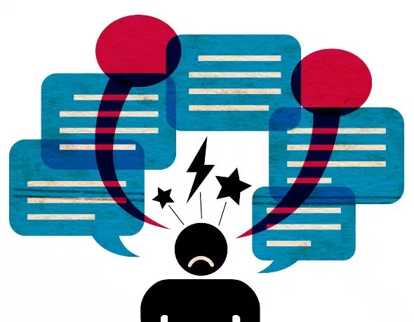

La desinformación es un fenómeno comunicativo que afecta o modifica el mensaje que recibe una persona. En primer lugar, se explicará la manipulación de la información: la desinformación es la forma en que se manipula la estructura y destino del mensaje que envía el emisor hacia un determinado receptor o varios. Por ello, sus principales objetivos son ocultarla o modificarla. Por un lado, ocultar la información es enmascarar o tapar es una estrategia usada en campañas políticas para persuadir a los votantes y obtener la victoria, pues los líderes de la campaña les dan a sus votantes lo que quieren escuchar sin mostrarles lo que en verdad están planeando. Por otro lado, modificar la información o tergiversar el mensaje que el receptor va a recibir es una manera de exponer un objetivo sin mostrar parcialmente las verdaderas intenciones de quien lo propone. Por último, el medio que usa la desinformación es lo fundamental para que la nueva información pueda llegar hacia una determinada cantidad de receptores. Esta se actualmente se divide en dos partes: El internet y los medios secundarios. Por un lado, el internet hasta ahora se ha convertido en el medio digital de transmisión de información en todo el mundo son 800.000 las páginas web que poseen todo tipo de información (falsa o verdadera) a las que se pueden acceder las 24 horas del día. Por otro lado, están los medios secundarios, pero no menos relevantes como: la televisión, periódicos, revistas, murales institucionales, etc.
Los siguientes dos antecedentes ayudan a explicar mejor como la desinformación puede ser usada indebidamente.
Por un lado, la incursión de las AFP en publicidad engañosa y desinformación en la década de los 90s. Esta situación consta de tres factores muy importantes. El primer factor, según Barreda, el 82% de las personas que se afiliaron afirman que era injusto lo que recibieron y el 45% no recibió su bono o estaba inconforme con el servicio en la década de los 90s al jubilarse en 2015. El segundo factor, en que las políticas del estado promovieron la desinformación hizo que estos dejaran de cumplir con convenios y acuerdos internacionales sobre la existencia y continuidad de un sistema previsional público, debido a esto el estado no tenía la situación actual los millones de trabajadores del Perú. El último factor fue la incursión de las AFPs en la publicidad engañosa, dejó a millones de peruanos desinformados. Esto hizo que las AFPs omitieran información relevante sobre el sistema de pensiones al que se iban a afiliar los millones de peruanos.
Por otro lado, los conflictos post-electorales en las Elecciones Municipales y Regionales de Perú en el 2014 . Se divide en dos partes: conflictos post-electorales y desarrollo de conflictos. En primer lugar, los conflictos post-electorales desembocaron en violencia debido a la inconformidad de los votantes respecto al resultado. En segundo lugar, el Desarrollo de los conflictos, se compone de tres partes, el fraude, la segunda vuelta y la violencia en las elecciones. El fraude, donde se camuflaban los resultados de los votantes para persuadir a los votantes. En la segunda vuelta se elegían a los cargos ejecutivos y legislativos necesitaban más del 50% de votos para ganar. Y la violencia generada en todo el desarrollo de las elecciones es ocasionada por todos los implicados en las votaciones debido a su inconformidad ante el estado actual de la política.
La desinformación al ser una problemática mundial posee varios implicados, víctimas y responsables. En primer lugar, los que desinforman son los que tienen el poder de transmitir un mensaje mediante cualquier medio de comunicación (emisor). Estos emisores se pueden dividir en los siguientes dos grupos: común o pasajero y resaltante y constante. El emisor común es el que emiten el mismo tipo de información una y otra vez sea verdadera o no, sean las redes sociales, las portadas de los periódicos y estaciones de radio. El emisor resaltante y constante son todos los tipos de emisores con los que un receptor interactúa todos los días, sea gente de la calle, familia, televisión, revistas, periódico, internet, murales institucionales, etc. En segundo lugar, los afectados. Los que sufren el fenómeno de la desinformación son los receptores, pues ellos reciben la información del emisor, esta puede estar tergiversada si ha sido transferida o haber sido creada. Por último, ¿Quién lo evita o soluciona?, pues los implicados en la ejecución de la desinformación son dos los elementos que importan: los receptores y los que controlan los medios de comunicación. Los receptores son quienes deciden qué hacer con la información que reciben. Losios de comunicación o quienes lo controlan [2] tienen la responsabilidad s
Para entender mejor el problema de la desinformación en los medios de comunicación es necesario analizar las diferentes estadísticas y ejemplos que se conocen sobre esta problemática. Los ejemplos mencionados a continuación nos permiten concluir como la manipulación negativa o la falta de información en los medios de comunicación afectan a nuestra sociedad.
Se han obtenido datos estadísticos que evidencian la predominancia de la finalidad comercial en la mayoría de los medios de comunicación. De esa manera, un estudio de CONCORTV señala que en el año 2017, el 74% de estaciones de radio y tv eran de finalidad comercial, solo el 25.7% de finalidad educativa, y el 0.3% de naturaleza comunitaria. Por ende, se puede inferir que la calidad de la información obedece a la necesidad del mercado. Es decir, prioriza más como fin vender un producto que brindar en si la información. Asimismo, en el 2018, las cifras no cambiaron en gran medida a excepción del los medios con fines comunitarios que presentaron un pequeño incremento.

Se puede citar algunos ejemplos de desinformación en los medios de comunicación. Uno de ellos es el caso de la ley 3188, la cual fue manipulada por el diario La República, en esta noticia publicada en su periódico se redactó de manera positiva una ley que afecta a miles de niños y brinda dinero a colegios millonarios. Esto causaba otra visión al lector y perjudica a la sociedad dando mala información. Además, como siguiente ejemplo podemos ver la cobertura del caso Zika el cual fue criticado porque se caracterizó por su inexactitud y su sensacionalismo. Por esa razón, la UNESCO decidió promover el potencial de los medios de comunicación en caso de crisis, brindando un taller de información. Adicionalmente, el ejemplo de la difusión sobre el huracán Matthew demostró cómo los medios enfatizan aspectos irrelevantes de una noticia que causó diferentes problemas a la sociedad. Así diferentes fuentes solo enfatizaron aspectos irrelevantes de la noticia como la imagen difundida del huracán que tenía la forma de una calavera.